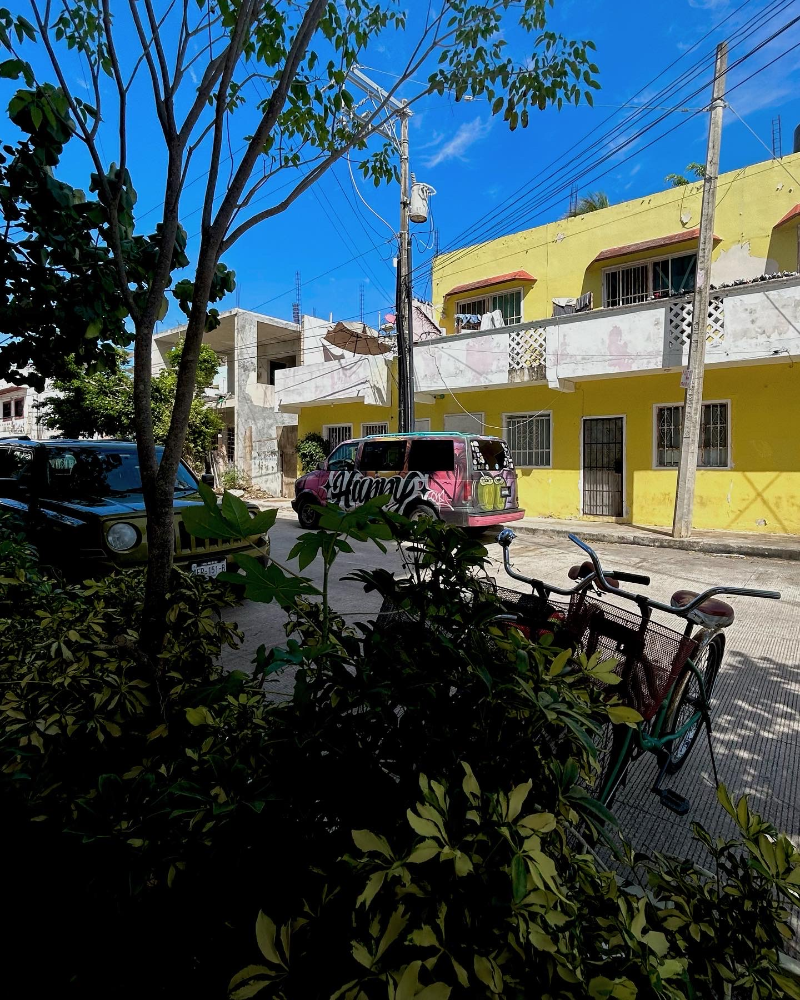
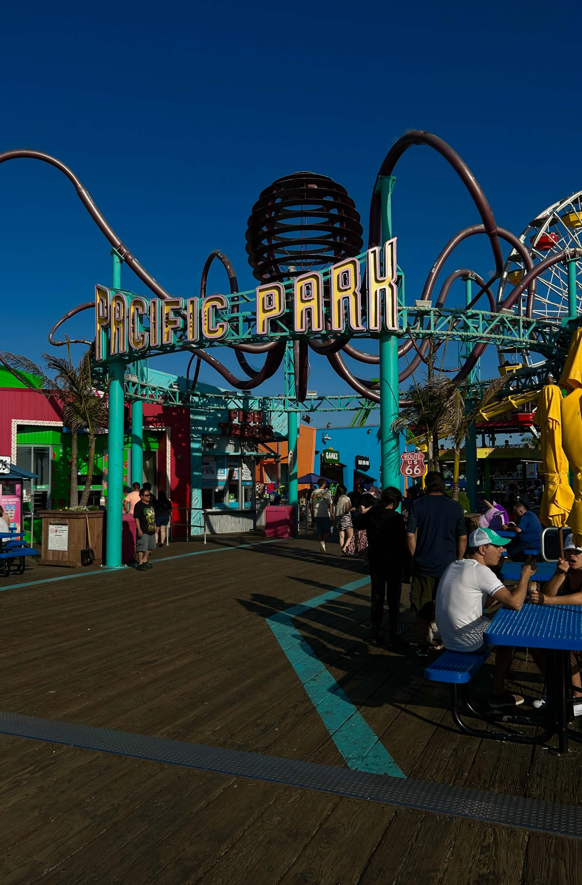
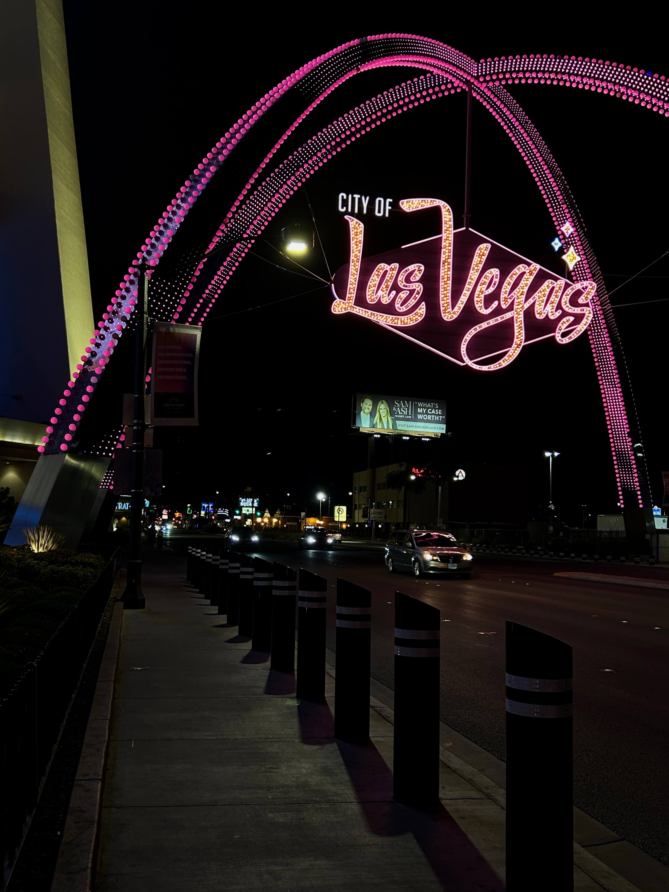

Playa del Carmen, Mexico
Playa del Carmen is a beautiful coastal town in Quintana Roo, Mexico, nicknamed Playa. Fun fact: It is home to the chicozapote tree, the Mayan chewing gum tree. One reason I adore Playa del Carmen is the possibility of adventure. It is a popular tourist destination that encompasses traditional Mexico with the modernization of Western culture. Like me, you can explore the Caribbean Sea by scuba diving, snorkelling or exploring the local cenotes. A 10/10.
Santa Monica, California
Los Angeles, California, also known as “the City of Angels,” is known throughout the United States of America as the world’s entertainment capital. Los Angeles has many areas to explore, which is why I enjoy it. Los Angeles is fascinating. There are endless entertainment options, such as tours of celebrity communities to the street performers along Hollywood Blvd. The neighbouring beach community of Santa Monica is known for its miles of beautiful Pacific Beaches and the Santa Monica Pier. Pacific Park is an adorable amusement park on the Santa Monica Pier, creating the perfect environment for adults and children.
Las Vegas, Nevada
Las Vegas, Nevada, also known as “Sin City,” is a unique city in the United States of America. Known for its casinos and entertainment, the Las Vegas Strip is never dull. I love Las Vegas for the countless entertainment possibilities, like artist residencies or DJ appearances at day and night clubs. It is a place to have fun. Of course, certain activities require individuals to be 21 or older, but Las Vegas can also be a place for families to explore. The Las Vegas High Roller and Cirque du Soleil exemplify how families can enjoy Las Vegas, Nevada. Plus, the weather is a bonus!